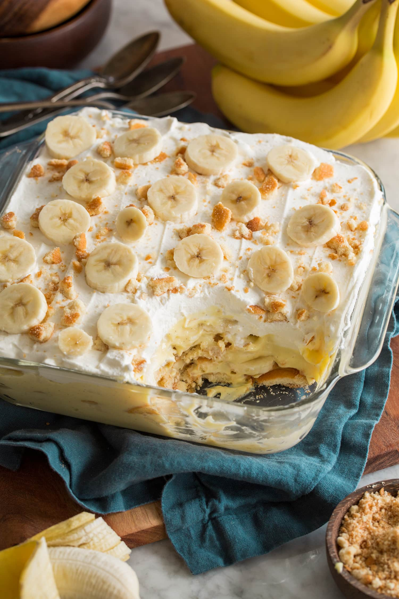

Banana Pudding Recipe

Description
Everyone needs a good banana pudding recipe in their repertoire — and this one makes by far the easiest, most delicious banana pudding you'll ever come across.
Ingredients
- 2 cups cold milk
- 1 (5 oz)package instant vannilla puding mix
- 1 (14 oz) can sweetened condensed milk
- 1 tablesppon vanilla extract
- 1 (12 oz) container frozen whipped topping, thawed
- 1 (16 oz) package vanilla wafers
- 14 small bananas, sliced or to taste
Steps
- Gather all ingredients.
- Place milk and pudding mix in a large bowl; beat with a whisk for 2 minutes. Blend in condensed milk until smooth.
- Stir in vanilla, then fold in whipped topping.
- Layer wafers, banana slices, and pudding mixture in a glass serving bowl.
- For best results, chill pudding in the refrigerator for at least an hour before serving. When ready to serve top with extra crushed wafers.
- Enjoy!